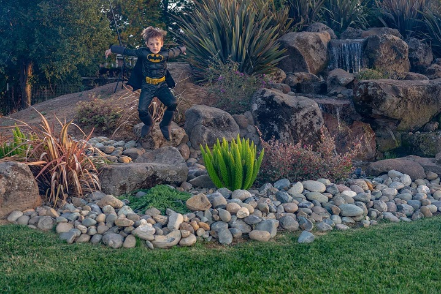

Batman Visits Local Halloween Party

In the name of his murdered parents, Bruce Wayne wages eternal war on the criminals of Gotham City. He is vengeance. He is the night. He is Batman.
One of the most iconic fictional characters in the world, Batman has dedicated his life to an endless crusade, a war on all criminals in the name of his murdered parents, who were taken from him when he was just a child. Since that tragic night, he has trained his body and mind to near physical perfection to be a self-made Super Hero. He's developed an arsenal of technology that would put most armies to shame. And he's assembled teams of his fellow DC Super Heroes, like the Justice League, the Outsiders and Batman, Incorporated.
A playboy billionaire by day, Bruce Wayne’s double life affords him the comfort of a life without financial worry, a loyal butler-turned-guardian and the perfect base of operations in the ancient network of caves beneath his family’s sprawling estate. By night, however, he sheds all pretense, dons his iconic scalloped cape and pointed cowl and takes to the shadowy streets, skies and rooftops of Gotham City.
DC Comics